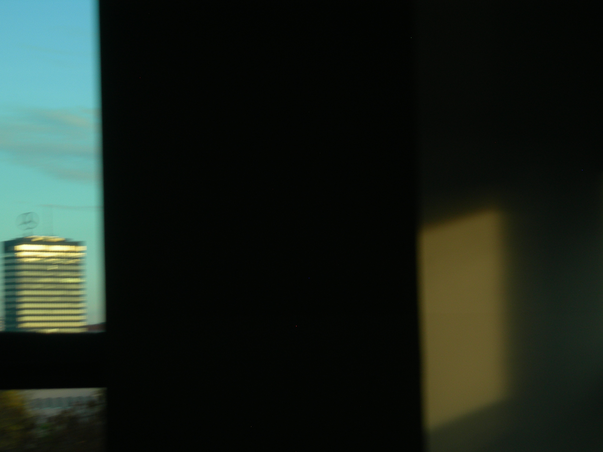
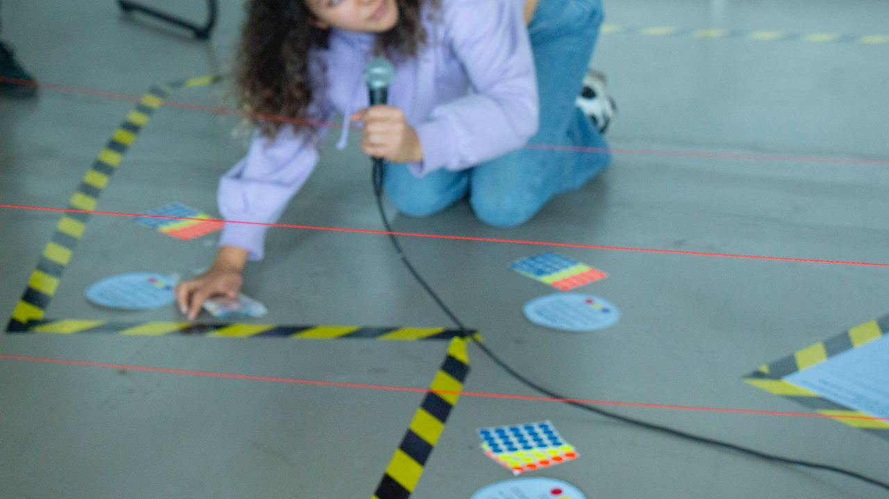
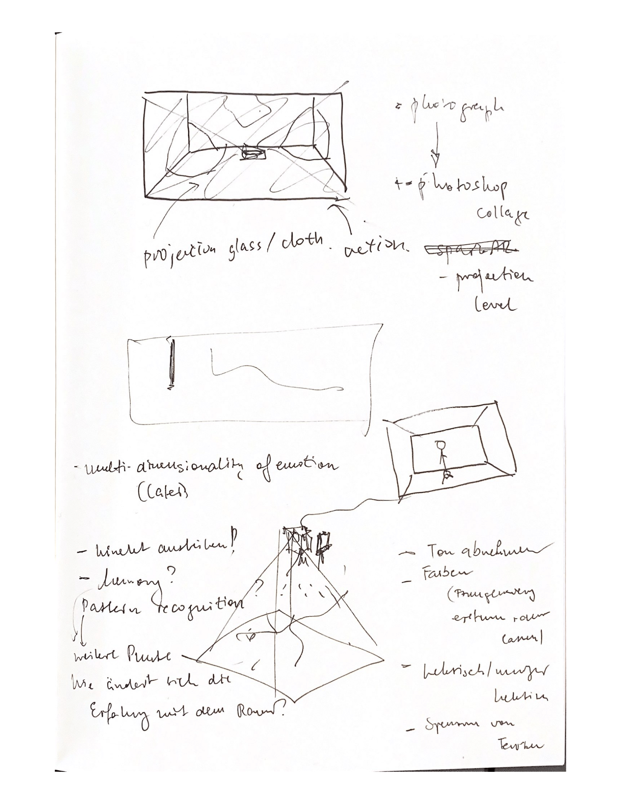
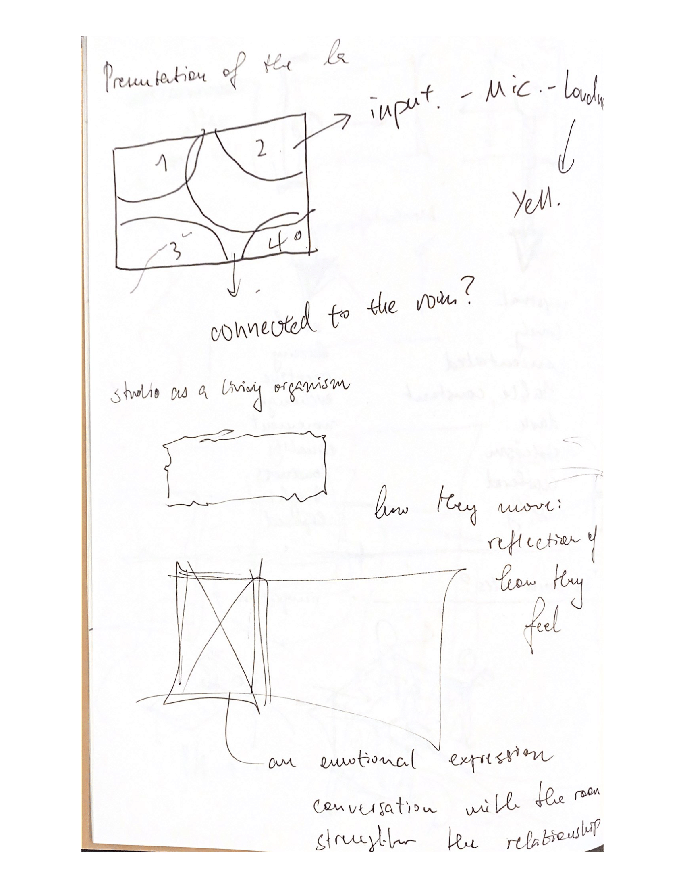
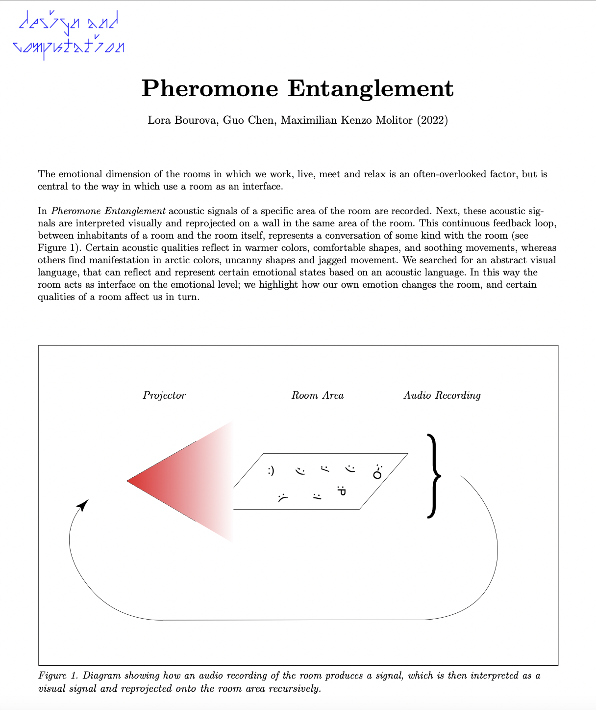

Raum als Interface
a personal work in progress journal
Raum als Interface. In diesem Seminar wird die Gesaltung eines Raums verfolgt, der multifunktionale Nutzungmöglichkeiten ermöglichen soll.
Er soll modular aufgebaut sein, und sich dadurch flexibel an verschiedene Nutzungsszenarien und verschiedene Bedürfnissen anpassen können.
Traditionelle, hierarchische Lehr- und Lernsituationen sollen abgebaut werden, und kreative Arbeit unterstützt werden. Insgesamt
soll er auch der Komplexität von, teils, digitalen und dicht vernetzten Informationsstrukturen gerecht werden.
Durch die Einführung verschiedener räumlicher Information- und Kommunikationssysteme, sollen mediale Erweiterungen des Raums erschaffen werden, welche die Interaktions- und Aktivitätsmöglichkeiten erweitern sollen.
Allumfassend soll dieser Raum das Framework des inter- und transdisziplinären D&C Masters bieten.
Dieses Journal soll meinen persönlichen Arbeits- und Gestaltungsprozess innerhalb des Seminars verfolgen und abbilden.
Dieses Journal soll meinen persönlichen Arbeits- und Gestaltungsprozess innerhalb des Seminars verfolgen und abbilden.
Session 1 bestand aus der Einführung in den Gegenstand und den Scope des Seminars.
Im sollen verschiedene räumliche Informations- und Kommunikationssystem als Interventionen des Raumes, entdeckt und angewandt werden.
Es wurden in randomisierten 2er Gruppen verschiedene Nutzungsszenarien zu einer ausgedachten Persona skizziert.
Basierend auf einer dieser Nutzungsszenarien, bestand unsere erste Aufgabe darin ein
spielerisches/experimentelles Nutzungsszenario zu gestalten und darzustellen. In diesem Nutzungsszenario soll ferner eine Aktivität durch eine mediale Intervention erweitert oder ermöglicht werden.
Dabei sollte auf ein analoges toolset (Tape auf dem Boden, Spiele, Pfeile, etc.) zurückgegriffen werden.

Su und Ich haben uns im Team zusammengefunden und Ideen ausgelotet.
Basierend auf einem Nutzungsszenario ('working in a co-working space') unserer ausgedachten Persona ('Mira') haben wir uns auf das Arbeiten im Cafe fokussiert.
Für uns hat sich herauskristallisiert, dass die ungezwungene, offene Atmosphäre des Cafes, ihn zu einem sehr interessanten Arbeitsort machen.
Das Cafe bietet viele verschieden Nutzungsmöglichkeiten, analog zur Idee des Raumlabors - man kann sich in eine Ecke setzen und sich vom Trubel der aktiven Gespräche distanzieren
und so nur die Atmosphäre als eine Art backdrop, als Hintergrund rauschen wahrnehmen und privat arbeiten. Auf der anderen Seite kann man aber auch das
Cafe zum Ort eines aktiven Austausches und kooperativen Arbeitens nutzen.
Zentral für uns war aber das Konzept des Cafes als Ort des Ungezwungenen. Deshalb führen wir eine, durch Tape abgegrenzte, Chill-Zone als Intervention des Raumlabors ein, in der klare, feste, starre Regeln bezüglich
des nicht-arbeitens und regel-orientierten Ausruhens deklariert werden. Impliziert die Existenz der Chill Zone auch die Existenz der Work-Zone?
In der folgenden Woche haben Su und Ich uns auf viele Regeln geeinigt - im Endeffekt haben wir 8 Regeln dieser Sammlung auf einem Poster festgehalten. Die '1. ChZnVNG'
deklariert auf Englisch, wie auch auf Deutsch, 8 klare und transparente Regeln, die das Regel-orientierte Chillen ermöglichen sollen. Dies stellt gewissermaßen eine
Bürokratisierung der Chill-Zone dar.
Die Chill-Zone wird durch ein gelb-schwarzes Tape deutlich zur Umgebung abgegrenzt. Dessen Platzierung auf einem Grundriss des alten Lesesaals, auf der '1. ChZnVNG' markiert ist.
3 Verschiedene Seitenbestimmungen an verschiedenen Positionen der Chill-Zone laden auch zu Übungen und Ritualen ein, welche zur Entspannung führen sollen.

In unserem Showing wird auf Parallelen zu Bewegungen aus der Kunst der 60er Jahre hingewiesen, beispielsweise zur Fluxus-Bewegung. Ferner zum Künstler Aram Bartoll,
welcher im öffentlichen Raum eine
Handy-Nutzungs-Zone
aufgestellt hatte. Diese referenziert auf Raucher-Zonen an Bahnhofen der Deutschen Bahn. Inspiration hatten wir in unserem Projekt aber auch von Roland Barthes genommen, welcher in seinen Arbeiten, die Rolle von Cafes
im öffentlichen Raum skizziert. Jedoch haben wir keine tiefgreifende Recherche betrieben, sondern lediglich Inspiration darin genommen, dass das Cafe heute, wie auch im 20. und 19. Jahrhundert, eine interessante Rolle als Ort des
ungezwungenen Arbeitens wie auch Zusammenkommens eingenommen hatte. Dieser Ort des ungezwungenen Arbeitens und Treffens, stellt aber trotzdem
ein Ort dar, in denen viele soziale Regeln existieren. Diese scheinbare Kontradiktion war der Kern unseres Interesses.
George Maciunas, Fluxus Manifesto, 1963, Offset Lithograph, 20.9 x 14.7 cm, New York, The Museum of Modern Art.
Nach einer Animation zur Benutzung der Chill-Zone wurde das Chill-level systematisch dokumentiert. Nach Befolgung der Seitenbestimmungen wurden durch die chillenden Personen,
den Regeln entsprechend, die Stimmung und das Befinden nach der Ausführung einer Seitenbestimmung, durch das Aufkleben eines Stimmungs-markierenden-Stimmungsaufkleber
in einer aussagekräftigen Farbe dokumentiert. Ferner wurden in das sogenannte Stimmmungsbuch die jeweiligen Sorgen
der chillenden Personen verschriftlicht, dies sollte zu einer Loslösung, bzw. durch den Ausdruck einer spezifischen Sorge, zu einem Chill führen.
Folgende Fotographieren bilden diese Dokumentation ab.
Beobachtungen:
- Viele chillende Personen haben die Regeln der 1. ChZnVNG nicht beachtet und haben nur die entspannenden Rituale der Seitenbestimmungen befolgt.
- Als höchste chill-induzierende Seitenbestimmung wurde Seitenbestimmung 1 bestimmt.
- Viele potentiell chillende Personen sind nicht freiwillig in die Chill-Zone vorgedrungen. Als jedoch andere Personen die Chill-Zone geentert haben, wurden viele darauf aufmerksam und wollten dann mitmachen.
- Viele Chillende waren durch die Dehnübung verwirrt und haben diese nicht zur vollständigen Stringenz befolgt.
- Viele Chillende haben nicht die Regeln gelesen sondern eine Chill-beauftrage, die zur Zeit des Chills anwesend war, befragt.
- Viele Chillende waren nicht informiert bezüglich den durch die Stimmungs-markierenden-Stimmungsaufkleber ausgedrückte Stimmung. Rot wurde intuitiv als gestresst und Blau als beruhigt bewertet.
- Viele chillende Personen haben die Regeln der 1. ChZnVNG nicht beachtet und haben nur die entspannenden Rituale der Seitenbestimmungen befolgt.
- Als höchste chill-induzierende Seitenbestimmung wurde Seitenbestimmung 1 bestimmt.
- Viele potentiell chillende Personen sind nicht freiwillig in die Chill-Zone vorgedrungen. Als jedoch andere Personen die Chill-Zone geentert haben, wurden viele darauf aufmerksam und wollten dann mitmachen.
- Viele Chillende waren durch die Dehnübung verwirrt und haben diese nicht zur vollständigen Stringenz befolgt.
- Viele Chillende haben nicht die Regeln gelesen sondern eine Chill-beauftrage, die zur Zeit des Chills anwesend war, befragt.
- Viele Chillende waren nicht informiert bezüglich den durch die Stimmungs-markierenden-Stimmungsaufkleber ausgedrückte Stimmung. Rot wurde intuitiv als gestresst und Blau als beruhigt bewertet.
Ab Woche 5 wurden wir in neue Gruppen zufällig augeteilt. Somit bin ich in die Gruppe mit Lora und Keny gekommen.
In unserer Zusammenarbeit haben wir viel diskutiert. Anfangs haben wir auch viel darüber geredet, womit sich unser Projekt beschäftigen soll.
Dabei haben wir viele Ideen gesammelt, und eine Liste mit 8 Ideen entwickelt. Nach einem relativ langen Iterationsprozess hat sich dabei unsere Kernidee
'people's emotional relationship with the room' ausgebildet, auf die wir uns geeinigt haben - die emotionale Beziehung des Menschen mit dem Raum.
Folgende Skizzen Loras' bilden unseren Arbeits- und Ideenfindungsprozess ab.





Diese Zusammenarbeit würde ich aus meiner Perspektive keineswegs als einfach darstellen.
Viele verschiedene Ideen und Weiterentwicklungen wurden vorgeschlagen. Dabei hatte ich stets das Gefühl
diese Ideen in ein kohärentes Konzept einbetten zu müssen.
Am letzten Donnerstag vor den Weihnachtsferien wurde ein Showing unserer Projekte, beider Perspectives Module angesetzt.
Dies hat sich als sehr Produktiv herausgestellt, insofern als dass wir es gemeinsam geschafft hatten, ein, aus meiner Perspektive,
abgerundetes Projekt zu entwickeln, welches sich in das Konzept 'people's emotional relationship with the room' vollständig einordnen konnte.
Im Endeffekt ging es darum, in einem Teil des Raumes, Audio- und Bewegungsdaten zu messen. Diese sollten dann im Computer interpretiert werden und
als visuelles Signal auf denselben Teil des Raum projiziert werden. Umgesetzt mit dem Programm Touchdesigner, sollten die gemessenen, Audio- und Bewegungsdaten als projizierte, visuelle-graphische Ausdrücke,
die Stimmungen und Emotionen der Menschen im Raum wiedergeben, oder spiegeln. Es sollte eine Art Gespräch mit dem Raum entstehen, ein Feedback-Loop, mit graphischen Interpretationen, welche
emotionale Stimmung der Menschen wiedergeben sollte, und in der Theorie zu einem Art Emotionalen-Gespräch mit dem Raum animieren.
Eine exploration des Raum auf der Emotionalen Dimension, die oft auch wenig Beachtung findet.
Dieses Gespräch haben wir auf unserem Poster zu dem Projekt näher erläutert, wie auch als Diagramm aufgefasst.

Das Poster des Showings

Unsere Installation, mit Poster und Projektionsfläches
Nachdem wir uns auf das Konzept 'people's emotional relationship with the room' geeinigt hatten, ging es in unseren Gesprächen um zwei Kernthemen.
Erstens, die graphische interpretation verschiedener Emotionen. Beispielsweise in der folgenden Situation: die Lautstärke im gemessenen Raumabschnitt
ist hoch, viele Menschen bewegen sich viel, die Stimmung ist als angeregt, aufgerecht, aufgeladen. Wie würde ein graphische Projektion ausehen, welche genau diese
Stimmung der Menschen adequat wiederspiegelt? Über diese Zusammenhänge, zwischen gemessenen Indikatoren, verschiedener Stimmungen und Emotionen und möglichen Graphischen
Interpretationen hatten wir gesprochen. Zweitens, und oftmals aus meinen Sorgen, entstehenden Sorgen, bezüglich einer Vernachlässigung der Problematik:
was sind Emotionen überhaupt und wie können wir sie messen. Eine sehr psychologisch-philosophische Frage, inwiefern auch überhaupt indikatoren und messungen
von Verhalten und physiologischen Reaktionen überhaupt die Inferenz auf interne Emotionen ermöglichen. Emotions-Begriffe werden teils auch aus der Motivation heraus, psychologisch-definierte Konzepte für eine Operationaliserung bereitzustellen, festgelegt.
Andererseits, gilt es festzuhalten das verschiedene Emotionen unabhängig von Kultur und Sozialer Gruppe präsent scheinen, also dem Menschen Inherent scheinen (..). Im Kontext der Nature vs Nurture Debatte, eher auf der Seite der Nature.
Aus allen Spezies scheinen wir die emotionalste zu sein (Hebb, 1980).
Und Emotionen gibt es auch beispielsweise bei Affen.
Jedoch möchte ich dringlichst, auf die methodischen Problematiken hinweisen, mit denen auch
sehr wissenschaftliche Experimente zu kämpfen haben, wenn es darum geht, das kulturell stark aufgeladene Konzept, Emotion zu untersuchen ().
Aus psychologischer Sicht, gibt es, wie bereits erwähnt, die Unterscheidung zwischen Emotion und physiologisch-körperlichen Reaktion. Physiologisch-körperliche Reaktionen sind beispielsweise Schwitzen, Zittern, oder erhöhter Herzschlag, in Reaktion auf interne Emotionen. An dieser Stelle würde ich gerne eine berühmte Definition James' zitieren: "everyone knows what attention is" (James, 1890). Jede Person weiß was Aufmerksamkeit ist, und hier würde ich auch vermuten, dass jede Person, die diesen Text liest weiß was Emotion ist. Und obwohl, jede(r) weiß was Emotion ist, möchte ich jedoch darauf Aufmerksam machen, dass es schwer ist eine Definition zu finden, bzw. es viele gibt, aber ich diese hier biete: Emotionen werden als bewusste, subjektive Erlebnisse, begleitet von körperlichen Reaktionen, wahrgenommen, welche in Reaktion auf unsere Umwelt entstehen und eher kürzerer zeitlicher Dauer sind (mehr dazu später). Dabei kommt natürlich die Frage auf, inwieweit diese beiden Komponenten (Emotion und körperliche Reaktion) zusammenhängen. Ist unser subjektives Erleben von Emotionen, beispielsweise die Emotion, die durch ein schokierendes Ereignis entsteht, wie einem drohendem Straßenunfall (Abb. 1), unserer Körperlicher Reaktion auf die Situation zeitlich nachgestellt, also eine Reaktion auf diese? Oder, reagiert unser körper mit Schock, Zittern, Lähmung, auf unser subjektives Erleben? weil wir uns schokiert fühlen?
Aus psychologischer Sicht, gibt es, wie bereits erwähnt, die Unterscheidung zwischen Emotion und physiologisch-körperlichen Reaktion. Physiologisch-körperliche Reaktionen sind beispielsweise Schwitzen, Zittern, oder erhöhter Herzschlag, in Reaktion auf interne Emotionen. An dieser Stelle würde ich gerne eine berühmte Definition James' zitieren: "everyone knows what attention is" (James, 1890). Jede Person weiß was Aufmerksamkeit ist, und hier würde ich auch vermuten, dass jede Person, die diesen Text liest weiß was Emotion ist. Und obwohl, jede(r) weiß was Emotion ist, möchte ich jedoch darauf Aufmerksam machen, dass es schwer ist eine Definition zu finden, bzw. es viele gibt, aber ich diese hier biete: Emotionen werden als bewusste, subjektive Erlebnisse, begleitet von körperlichen Reaktionen, wahrgenommen, welche in Reaktion auf unsere Umwelt entstehen und eher kürzerer zeitlicher Dauer sind (mehr dazu später). Dabei kommt natürlich die Frage auf, inwieweit diese beiden Komponenten (Emotion und körperliche Reaktion) zusammenhängen. Ist unser subjektives Erleben von Emotionen, beispielsweise die Emotion, die durch ein schokierendes Ereignis entsteht, wie einem drohendem Straßenunfall (Abb. 1), unserer Körperlicher Reaktion auf die Situation zeitlich nachgestellt, also eine Reaktion auf diese? Oder, reagiert unser körper mit Schock, Zittern, Lähmung, auf unser subjektives Erleben? weil wir uns schokiert fühlen?
„Wir sind traurig, weil wir weinen, wütend, weil wir zuschlagen, wir haben Angst, weil wir zittern.“ (James, 1890, zum Zusammenhang zwischen körperlicher Reaktion und Emotion).
3 Verschiedene psychologische Theorien stellen mögliche Zusammenhänge zwischen Körperliche Reaktion und Subjektives Erleben auf (Abb. 1). In der James-Lange Theorie
gibt es auf eine erschreckende Situation in der Umwelt (heranrasendes Auto), erst eine körperliche Reaktion, durch z.B. erhöhtes Herzklopfen, welche dann die Emotion Angst auslöst.
In der Cannon-Bard Theorie finden beide Kompenenten, körperliche Reaktion und Emotion, gleichzeitig und parallel statt. Letztlich wurde in der Schachter-Singer Zwei Faktoren Theorie,
die gleichzeitig-stattfindende bewusste Kognitive Bewertung körperlicher Reaktionen, und der nachfolgend-entstehenden Emotion, postuliert.
Verschiedene experimentelle befunde Stützen diese auch.

Abb. 1: 3 verschiedene Theorien der Emotion, bzgl. des Zusammenhangs zwischen Emotion und physiologishen Reaktionen: James-Lange Theorie, Cannon-Bard Theorie und Schachter-Singer Zwei-Faktoren Theorie. Abbildung übernommen aus Myers, 2008.
Dann gibt es noch unterscheidungen zwischen Emotion, Mood und Stimmung, welche eher temporaler natur sind.
Hebb, D. O. (1980). Essay on mind. Hillsdale, NJ: Erlbaum. 9–16. (pp. 230, 371)
Hebb, D. O. (1980). Essay on mind. Hillsdale, NJ: Erlbaum. 9–16. (pp. 230, 371)